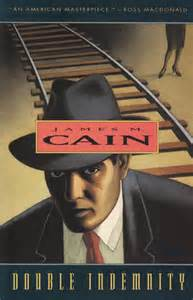
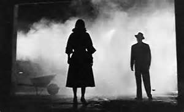
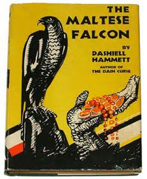

To Noir or Not to Noir
How could I know that murder can sometimes smell like honeysuckle?
—Double Indemnity (“Walter Neff” speaking Raymond Chandler’s dialogue for the Billy Wilder adaptation of James M. Cain’s novel)
When Hamlet says the time is out of joint, I don’t think he means the spectacle grotesquerie of Titus has taken over or that the monstrous Grendel family has become the national norm. What he’s registering is less Jacobean or apocalyptic than something atmospheric and acidic, a loss of clarity and order, worse causes made to seem the better. The unstable realm Chandler and Cain convey so well on the page. The Prince is not sure what to do, as his world has slipped out of plumb and square, “sigodlin,” some highlanders would say – skewed, cattywhompus. Light source and shadow don’t coordinate, the ground surface slopes and fractures, codes are riven, cause and effect divorced, the funeral feast serving as the wedding fare. Yes, there’s some murder, incest, secrecy and creepy double entendre in the play, but mostly “rats” doing surveillance behind the arras, power perverted, the Seven Deadlies gone viral, temptation the air the Danes breathe, surrender to it almost the norm. And though no easy or reasonable solution presents itself, he’s got to do something. I like to imagine a young Robert Mitchum as the great melancholy Dane. What would he have done, besides smirked, quipped and smoked?
{kind=link}
This Elsinore resembles the world, as I see it, of noir, as much a matter of presentation style, thin ice and seeping menace as storyline, an atmosphere dreamlike and brutal with ill-lit chambers and erotic innuendos that seldom translate as sexy. Although this swirl of mysteries and transgressions doesn’t originate in the films of the 1940’s and 50’s, the “black film” of that era came to the fore and captured a large zone of the American imagination. In 1947 Donald Marshman wrote that post-war audiences found themselves in the hands of an industry experiencing an affinity for morbid drama in which characters couldn’t or wouldn’t control their venal impulses. Although the Production Code forbade story lines in which rogues commit atrocities with impunity, the narrative points of view (often tough-talking protagonist monologues or wry voiceovers) were designed to make viewers want (okay, “half want”) perpetrators of some crimes to go unpunished (or inadequately punished), because the miscreants were intriguing mischief-makers, vehicles of catharsis. In fact, the villains and their adversaries are often difficult to distinguish. Sam Spade in The Maltese Falcon has mixed motives and too much self-interest to be “heroic.” Philip Marlowe’s not too different.
{kind=link}
When I decided to slant an issue of Shenandoah toward the noir, I was pretty vague on my definition of the term, and I’ve since discovered that the more precise and coherent your criteria, the more argument you’ll get from other aficionados. Whoever’s making the list will mention shadows (interrogation lamps, passing headlights, slatted blinds) and smoke (Pall Mall, Lucky, Smith and Wesson, locomotive exhaust), as well as the femme fatale, the wisecracking antihero, sleaze, intrigue, lethal cool. And lots of lurking. With second generation and post-noir noir the action gets rougher, the background jazz raspier, the action grittier and more explicit. There’s no definitive formula, no consensus, but film and literary critics use the term with authority and conviction. Books are published, festivals held, Lawrence Block and Jim Thompson celebrated along with film directors and cinematographers.
{kind=link}
It’s not hard to see how, in this mood and mode, the directors, screen writers and novelists of the last seven or eight decades have influenced one another across genres and media, as they were often the same guys (though not always “guys,” even early on, as Ida Lupino’s history reveals). I’ve read my share of Elmore Leonard, Raymond Chandler, Dashiell Hammett, James Lee Burke, even Mickey Spillane and Robert B. Parker, so I know that writers I admire (and those I don’t) have long been drawn to these bleak but stylish exercises in chiaroscuro and revenge, seduction and pursuit. They gravitate to the smooth humor and sang froid of the seekers, the whiplash of sudden violence and the dynamic tension between the polished and the raw. True enough, I’m not certain where mystery leaves off and crime begins, noir takes up and intrigue takes over, how much thrill infuses suspense. Maybe the great mystery of noir is: what is its essence? And is it a form, a genre, a catch-all term for a set of slippery conventions (often the result of often B-movie conveniences)? I wanted to see what would happen if I sent out a call for submissions (the word is almost noirish itself – sub/mittere) and set about, with the assistance of my interns, selecting the pieces which seemed most successful, rich, provocative, psychologically poignant, sinister through insinuation. I had expected a lot of the stories and poems interested in approaching the noir would be period pieces with malefactors driving Nashes and wearing crimped fedoras. That turned out not to be the case. In fact, I now wonder if Shenandoah’s recent history (and mine) attracted dark stories played out in less urban spaces than the usual. Call it agrinoir or non-neon noir.
{kind=link}
What I did both hope for and receive were works about characters who were more people than monsters with atrocious childhoods that drove them to collect the eyeballs of cheerleaders or hold hostages in sewage-flooded warehouses with bins of Mae West costumes and cattle prods. In other words, I didn’t receive an avalanche of Criminal Minds, SVU, Blacklist and CSI scripts trying to trump Gacey, Manson, Bundy and Hannibal the Cannibal. Little splatter, more missing persons and perplexing missions, but also less “organized crime” than I had anticipated. I confess to missing the kind of smooth and “rational” kingpin portrayed by Kirk Douglas in Out of the Past.
{kind=link}
Venal people, flawed, tempted – people who lose control but don’t turn it into a charming avocation. These are what our readers will find in the noir writing here, all mixed in with other poems and stories drawn from our usual avalanche of submissions. I don’t think anyone will struggle to sort the dark current of noir channels from the mainstream, and sometimes the titles are, well, a dead giveaway. I was delighted to find a few overtones of TV’s Peter Gunn and Boston Blackie, as well as indebtedness to the perennial favorites on the film noir roster, and I should list some I return to so readers might get an idea of where my noir compass needle points: *Out of the Past, *The Big Sleep (both versions), Citizen Kane, Double Indemnity, The Postman Always Rings Twice (first version), The Blue Dahlia,* The Maltese Falcon, Laura, *The Killers, Touch of Evil, Scarlet Street, *The Night of the Hunter, Brighton Rock, The Third Man, Cape Fear (both), *Mickey One, *Klute, Murder, My Sweet; Body Heat, Blood Simple, The Pledge, *Chinatown, *Blade Runner, Taxi Driver, Suspicion. (starred titles my favorite favorites) No doubt readers will be quick to ask, “Where’s X or Y?” I’m already doing it too.
{kind=link}
Hard-boiled, thriller, mystery, crime – following the spoor of these labels will draw an investigator into the territory where I think noir simmers. It’s a somewhat different direction from super powers, paranormal events, zombies, weredogs, closet monsters, witches, alien storm troopers, time travelers. These are terms more likely to lead away from my noir zone, where characters who metamorphose don’t grow fangs, fly away, deflect bullets or sport tails with stingers. The gumshoe’s revolver may somehow fire eight rounds without being re-loaded, but it doesn’t spew bats or emulsify anyone. Neither physics nor metaphysics are problematized, though the emphasis may be on aesthetics and ethics. It’s an old personal preference – naturalism over supernaturalism, physics and metaphycics over hocus-pocus and the “black box” – a question of conventions and confidence. One set of noir’s practices concerns its brand of verbal (Marlowe’s specialty) and visual euphemism (as opposed to splatter), which is worthy of an essay of its own, and I’m aware that my taste may be more guided by nostalgia than I can see clearly. After all, I’m attracted to the shadows and silvery borders, the smoky dives and wharves which provide atmosphere for dangerous thresholds and moral chiaroscuro. It’s hard to see in there, but I hope some readers share my affinity for the dusk. If I yearn for the silky overtones of noir action and passion, it’s not because I think a knife in Peter Lorre’s hand is more dangerous than sabre talons on a mutant wolverine, but because the action figure drama that intoxicated me wore out as I grew addicted to that set of “givens” we call “realism,” and I’ve seen “guys blowing stuff up” enough to want the studios to sign non-proliferation treaties. “Enough” is important here. The fashion for inserting zombies or the supernatural into any story — and I’ve heard that agents and editors are actually telling writers to add this ingredient (“Can you supersize this for me?”) — has worn thin for me. I thought it clever at first, a strategy for refreshing some story lines and situations, but in some places it has become the mainstream and is already as wearying as the realism/naturalism it was designed (if Stan Lee and his cohorts and counterparts had a design beyond what was fun and profitable for them) to shake up.
{kind=link}
{kind=link}
“Who’s there?” begins Hamlet, and it’s the question I ask the mirror on a regular basis. In today’s theater it might have to be a guffaw-inducing, “WTF?” So much for nuance, finesse and the invitation to explore one’s own darker side in a ruminative fashion. When our nation grew stable enough to think of certain behavior and problems as part of “the frontier,” maybe we grew a little too self-satisfied, which is never advisable. I see the writing and films we’re tempted to call “noir” as asserting that a brand of shiftiness and danger we had long assigned to “the frontier” (or the future or other planets) inhabits the green zones as well. What the hybrids, rippers and “collectors” do may not invite us to “identify with.” They may be outside the range of our empathy and of little use in our self-interrogation, but every time I see Warren Beatty in Mickey One fleeing a mysterious someone he’s unwittingly offended, watch William Hurt as Ned Racine falling under the spell of Kathleen Turner’s Matty in Body Heat (enough witchcraft to hold me for a while), study the lawyer in Cape Fear, the amateur sleuth in Klute or Nicholson’s Jake as they try to find what can be surrendered without losing one’s humanity (and what he can milk from the circumstances), especially in Chinatown, I feel challenged and wonder about what I would do when the only light in a corridor is a bare bulb swaying on its wire and the smell of cigarette smoke just around the corner is mixed with Chanel and cordite. Or what I would say to the perennial, “That’s all you have to do for your cut. You in?” The noir encourages me to speculate and project and perhaps somehow know. RTS
{kind=link}
{kind=link}